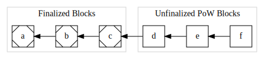
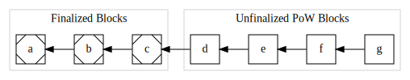
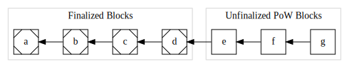
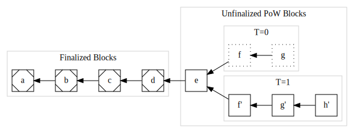

A Trailing Finality Layer for Zcash
This book introduces and specifies a Trailing Finality Layer for the Zcash network.
This design augments the existing Zcash Proof-of-Work (PoW) network with a new consensus layer which provides trailing finality. This layer enables blocks produced via PoW to become final which ensures they may never be rolled back. This enables safer and simpler wallets and other infrastructure, and aids trust-minimized cross-chain bridges. This consensus layer uses Proof-of-Stake consensus, and enables ZEC holders to earn protocol rewards for contributing to the security of the Zcash network. By integrating a PoS layer with the current PoW Zcash protocol, this design specifies a hybrid consensus protocol.
The rest of this introductory chapter is aimed at a general audience interested in the context of this proposal within Zcash development, status and next steps, motivations, a primer on finality, and tips to get involved.
A Path to Proof-of-Stake Zcash
This Trailing Finality Layer (TFL) design provides a possible first step in transitioning Zcash to a Proof-of-Stake (PoS) protocol. Here we describe how a transition to PoS relates to "the Zcash roadmap" and how TFL fits into one approach to a PoS transition.
The Zcash Tech-Tree
There are multiple developer orgs working on different proposed features for Zcash. Some of these involve multiple large distinct upgrade steps, and several of these steps depend on other such steps. This could be represented as a directed-acyclic graph. We have begun referring to this space of possible future improvements as the Zcash Tech-Tree, taking inspiration from an analogous concept in gaming.1
We envision a proof-of-stake transition path as one of the potential paths within this tech-tree which is the primary protocol focus of this proposal.
A Proof-of-Stake Transition Path
Given that context, we envision a "path" within the Zcash Tech-Tree for transitioning Zcash to PoS. At the top-level we propose this path contains at least two major milestones:
- Transitioning from current Zcash PoW to a hybrid PoW/PoS system.
- Transitioning from a hybrid PoW/PoS system to pure PoS.
Our primary motivation for proposing (at least) two steps is to minimize usability, safety, security, and ecosystem distruption during each step.
Design Goals for a Hybrid PoW/PoS System
We are refining the design of TFL with several design goals in mind:
- We want minimal-to-no disruption for existing wallet use cases and UX. For example, nothing should change for the user flows for storing or transferring funds, the format of addresses, etc…
- We want a security analysis of the proposed protocol to be as simple as possible given existing security analyses of current Zcash.
- We want to enable new use cases around PoS that allow mobile shielded wallet users to earn a return on delegated ZEC.
- We want to enable trust-minimized bridges and other benefits by providing a protocol with assured finality (see Terminology: Protocol Concepts).
- We want to improve the modularity of the consensus protocol, which has several loosely defined and related meanings, e.g.: it's possible to understand some consensus properties only given knowledge of a "component" of the protocol, and it's possible to implement consensus rules in modular code components with clean interfaces.
We will be refining these goals and potentially adding more as we continue to develop this proposal.
With the motivation and goals for a first-step hybrid PoW/PoS protocol in mind, we introduce the specifics of TFL in the next subchapter.
See Wikipedia's Technology Tree - History section for details.
Trailing Finality Layer in a Nutshell
The hybrid PoW/PoS protocol proposed in this book is similar to today's Zcash NU5 protocol with the addition of a Trailing Finality Layer:
TODO: Add graphic showing nodes connected to each other in the p2p protocol. Each node has two parts: PoW and TFL. Each part has a distinct connection to the neighbors of the same part, so node A's "PoW" connects to node B's "PoW", node A's "TFL" connects to node B's "TFL". Finally, we want some way to visualize that all of the PoW nodes and connections were "pre-existing" and that the TFL pieces are a "new layer".
The Zcash Trailing Finality Layer refers to a new subprotocol of a new hybrid PoW/PoS protocol, which we refer to as PoW+TFL. This subprotocol introduces assured finality (see Terminology: Protocol Concepts) for the Zcash blockchain, ensuring that final blocks (and the transactions within them) may never be rolled back.
We use the term "layer" because we can understand this design as introducing a new layer to the Zcash network, making only minimal changes to the existing network and consensus protocol. This modular separation is present in the consensus rules, the network protocol, and the code architecture.
Why Should Users Care?
There are three categories of users this proposed TFL protocol would impact:
Current ZEC Users
Existing ZEC users who are primarily concerned with storing or receiving ZEC, whether private or transparent may benefit from this change in the short or medium term, because it may help lower delay times for some services, such as exchange deposits. As exchanges come to rely on the new finality guarantee, they can often reduce their deposit wait times. Other services with similar confirmation-depth-based wait times can be improved in a similar way to lower these wait times. Other than this improvement, these users should notice no other changes.
In the longer term, providing finality will be useful in establishing trust-minimized bridges to other blockchains. We anticipate this can enable better connecting ZEC to the Defi ecosystem, and with the introduction of Zcash Shielded Assets, this can enable other assets to connect to the Zcash shielded pool.
Proof-of-Stake Users
Users who are interested in providing finality infrastructure, or users who want to delegate ZEC towards finality, will be able to earn rewards from the protocol for doing so, while also taking on some risk to their funds (to prevent malicious abuse of the protocol). This may be an important new category of ZEC users and use cases.
Miners
Miners who provide Proof-of-Work security will necessarily see some reduction in their block rewards, since this proposal maintains the same issuance schedule and supply cap of ZEC while also spending some rewards on finality.
Important Note: The proportion and details of how much mining rewards will be impacted, and conversely how much finality/PoS providers will earn, are not yet specified in this proposal.
Why is this a Good Approach to a PoS Transition?
This design is appealing as a safer first step in transitioning the Zcash protocol for multiple reasons:
It Enables Proof-of-Stake Mechanisms Conservatively
This transition would enable PoS mechanisms, including the ability to operate PoS infratructure and delegate ZEC towards those providers to earn protocol rewards. While all PoS transitions would accomplish this, this approach does so in a conservative manner: it introduces these mechanics while striving to minimize the impact on existing use cases and protocol security.
In a sense, we can think of this approach as enabling the Zcash community to "dip our toes in the PoS waters" rather than diving in. If the results pan out well, it gives us confidence for further transitions. If we discover challenges, flaws, or risks, we anticipate their impact will be more limited since this is a more cautious transition step.
Minimal Use-Case Disruption
In many cases, existing products, services, and tools can continue using the mainnet chain with no changes to code assuming they rely on existingn consensus nodes. We view this as a major benefit which allows Zcash's existing user network effect to continue safely unperturbed.
There will be certain narrow exceptional areas if those products, services, or tools need to be precise in areas where the protocol has changed, such as mining/staking reward calculations, transaction formats (in particular any new PoS-related fields or logic), or chain rollback logic.
Minimal Consensus Rule Changes
Outside of PoS mechanics (such as bonding/unbonding stake, delegating, etc…), and changes to issuance (due to supporting both PoS and PoW) this design adds precisely one consensus rule:
Final blocks may not be rolled back.
We believe this presents a minimal change to consensus rules to enable PoS, and is thus one of the safest approaches to a transition in terms of security analysis.
Modular Design
By conceptualizing the TFL as a distinct "layer" or subprotocol, the consensus rules can be described as the explicit interactions between two subprotocols, one similar to the existing Zcash protcol as of NU5, and the other as a finalizing PoS protocol.
This approach helps in reasoning about failure modes, and how global consensus properties are achieved by which subprotocols.
Finally, since one subprotocol is very similar to the existing Zcash NU5 protocol, this lessens risk that the consensus properties within that subprotocol compromise current NU5 properties.
Modular Implementation
In addition to the other benefits of protocol design modularity, we anticipate actual implementations can realize this modularity in code. This can help makes implementations more robust, easier to maintain, and more interoperable.
For example, we can envision a standardized interface between PoW & TFL consensus components, enabling different development teams to provide these different components and for "full node" packagers to mix and match them. This is somewhat reminiscent of Ethereum's execution/consensus layer separation which we believe has shown great success in implementation team and product diversity.
Cracking the Nutshell
In the rest of the introductory section of this book, we describe the status and next steps for the TFL proposal, provide a motivation for finality, a way to visualize and reason about trailing finality, and suggestions for getting involved.
Status and Next Steps
This is an early and very incomplete protocol design proposal. It has not been well vetted for feasibility and safety. It has not had broad review from the Zcash community, so its status on any Zcash roadmap is undetermined.
Major Missing Elements
This design is at a very early stage and lacks substantial clarity around essential details. These details must be clarified before this proposal would be ready for the Zcash Improvement Proposals process. They include:
- PoS protocol selection,
- Issuance and supply mechanics, such as how much ZEC stakers may earn,
- A transition plan from current Zcash mainnet to this protocol design,
- The specifics of how PoW and PoS safely integrate,
- Security and safety analysis,
- Economic analysis,
- and more.
Next Steps
This design proposal is being developed by ElecticCoin Co as the first major milestone in our focus of deploying Proof-of-Stake to the Zcash protocol. Our rough near term plan for this proposal is as follows:
- Write a very high-level design overview which lacks many details but clarifies the general approach.
- Get early feedback from Zcash community and consensus protocol experts on this high level overview.
- If there are flaws so substantial that we decide the approach is infeasible, start over with a different PoS transition design.
- Otherwise, refine the high-level "overview" into a concrete, comprehensive proposal through multiple milestones with wide review.
- As the concrete proposal approaches maturity, draft one or more Zcash Improvement Proposals.
- Follow the general Zcash process for proposal/review/refinement.
- Follow the general Zcash governance process for proposal acceptance.
- If accepted, productionize the proposal in ECC products and collaborate with other implementors who implement the proposal.
- Celebrate when the proposal is activated on Mainnet. 🎉
Motivating Finality
In Zcash currently, consensus relies solely on PoW, which only provides probabilistic finality, rather than guaranteed finality.1 This style of consensus does not offer a guarantee that any given block may not be rolled back which may invalidate the transactions it contains. Instead, the probability that a block may be rolled back decreases as more blocks are mined subsquently on top of it.2
Let's walk through an example of how Zcash's current PoW with probabilistic finality can impede important use cases. Consider a PoW node which sees this block sequence at time T=0:

When should a user, wallet, or other system choose to act based on a transaction in a block?
For this example, let's assume a bridging system may have received a deposit for ZEC in block f and issued a corresponding number of proxy tokens on a different network.
At a later time, T=1, this same node may see a longer PoW chain which invalidates some previously seen blocks:

The node has observed a longer chain ending at block h', so PoW consensus calls for that new sequence to be treated as consensus. The previously seen blocks f and g are no longer part of the consensus history, and have been rolled back.
Impact of the Rollback
In our example, the bridging system acted in response to a transaction in the original block f at T=0. If the new sequence ending at h' no longer contains the deposit to the bridging system, the integrity of the bridge has been violated3; the associated proxy tokens may have already been used in a complex chain of Defi applications or deposited onto an exchange and sold, which would make any recovery impossible. The proxy tokens on the other network no longer correspond to the correct amount of ZEC on the Zcash network.
Rollback Complications
This example demonstrates how a lack of guaranteed finality can impede many useful real-world scenarios. In practice, systems and services which need greater assurances wait for more block confirmations.
This has several drawbacks:
- it doesn't remove the vulnerability, it only reduces the likelihood,
- different applications/services may require different block depths making it difficult to compose or chain together different applications/services,
- different block depth policies potentially confuse users, i.e. "why do I have to wait one hour for my deposit in this exchange, but only 30 minutes on that exchange?", and
- it introduces a delay which inhibits many useful applications.
In addition to these user-facing and economic drawbacks, correctly handling rollbacks makes the code for nodes, wallets, and other infrastructure more complex. Worse still, many systems may not have correct behavior for rollbacks at different depths, and since large rollbacks are rarer, these implementation flaws may not surface until there is a large rollback. While a large rollback would be disruptive all by itself, it becomes even worse when previously undiscovered bugs exacerbate the situation.
Trailing Finality Benefits
Trailing finality extends the existing PoW consensus so that older blocks become final, ensuring they cannot be rolled back, and by extension neither can any of the transactions they contain.
This directly addresses the first two flaws above: it completely removes the vulnerability and it ensures all systems which need finality behave consistently with each other.
As for delay, tailing finality also introduces delay since final blocks "trail behind" the most recent PoW blocks. This can be an improvement for some applications, but not others. For example, if the delay to finality averages around 10 minutes, then this would enable an improvement for an exchange which requires 60 minutes of PoW blocks for a deposit. On the other hand, it would not be an improvement for an application that needs finality faster than 10 minutes.
Finally, implementations can be simplified by relying on the guarantee of finality. For example, a wallet can describe any transaction as pending or final, and does not need to provide difficult and potentially confusing UX (and the supporting database sophistication) for handling rollbacks.
Footnotes
Throughout this book, when we say finality or final without other qualifiers, we specifically are referring to guaranteed finality or a guaranteed final block. Where we call out probabalistic finality we always use that qualifier.
The estimated probability of a rollback relies on a variety of PoW security assumptions, and can be violated in various conditions, such as in mining efficiency breakthroughs, compromises of the PoW challenge algorithm (e.g. hash function collision resistance failure), difficulty-adjustment-algorithm failures, sudden/surprise mining capacity increases, and so on. So the estimated probability can be violated in potential "black swan" events.
This discussion simplifies consideration of transaction rollback vs block rollback. When a block is rolled back, it is possible for some of the transactions contained in it to appear in new canonical blocks. The conditions when this can occur vs when it cannot are multifaceted and also subject to malicious influence, so for simplicity we assume all transactions within a rolled-back block are also rolled back.
Visualizing Trailing Finality
In the previous chapter we visualized a node's view of consensus in PoW and a valid rollback transition. When we consider a protocol combinging PoW with trailing finality, there are multiple possible transitions:
- PoW can make progress on discovering a new block,
- finality can make progress on finalizing a previously found block, and
- finality-constrained PoW rollbacks can occur.
However, unbounded PoW rollbacks may not occur, although they are valid in pure PoW.
Let's visualize a node's view of consensus through each of these kinds of transition to gain an intuition of the intended protocol's behavior.
Starting State
Let's begin at T=0 with a known-valid starting state:

This represents a sequence of blocks, similar to the first diagram in the previous chapter, except now we distinguish between finalized blocks (which have corner markings) and unfinalized PoW blocks.
In the intended protocol design, both PoW mining and finalization processes are concurrently making progress, so from this starting state we can observe either valid PoW mining progress or valid finaliztion progress.
Let's examine PoW progress first:
PoW Progress
At T=1 a new valid PoW block g has arrived:

Again, from this state either PoW or finality may make progress. For this example, let's assume finality makes progress next:
Finality Progress
At T=2 block d has become final:

PoW Rollback
Just as in vanilla PoW, rollbacks are possible so long as they involve no finalized blocks. To illustrate, we envision at T=3 the node discovers a new best PoW sequence endeing at h':

The blocks f and g from T=2 have been rolled back in favor of the sequence of f' → g' → h'. Because no final blocks are rolled back, this is a valid transition, just as for vanilla PoW.
Now let's consider an invalid attempt to rollback a final block:
An Invalid Finality Rollback
At T=4 the node learns of a new sequence ending in i'' where each header in the Proof-of-Work sequence is valid and demonstrates sufficient work accoring to pure PoW consensus:

The sequence d'' → e'' → f'' → g'' → h'' → i'' is invalid and rejected by the node because although it meets all PoW requirements, it does not extend from the most recent final block d and attempts to roll it back via d''.
Summary
Visualizing these possible transitions of a PoW-with-Trailing-Finality protocol helps provide an intuition about the intended protocols behavior.
Get Involved
We welcome contributions!
There are a variety of ways to contribute to this project:
Github
If you have a Github account, you can get hands on via the github repository for this book, including:
- Ask a Question - all questions welcome from basics to in-depth.
- Suggest an Improvement to the content, anything from typo fixes to major design change proposals.
- Report Rendering / Infrastructure Issues in case you're having trouble reading the content, viewing diagrams, rendering on your own computer, etc…
Zcash Forum
The Zcash Forum is a hangout for many Zcash enthusiasts. This is a good spot for more open ended discussion about this design proposal, alternatives, and other developments in Zcash.
Zcash R&D Discord
You can catch us on the Zcash R&D Discord in the #proof-of-stake channel.
Zcash Arborist Calls
The Zcash Arborist Calls are bi-weekly Zcash protocol development calls, where proposals like this are discussed. Feel free to come lurk, ask questions, or provide feedback or suggestions.
Terminology
Prior to providing the Overview, Design Specification and other sections, we present our terminology. If you prefer to learn terms in the conceptual flow, jump ahead to the Overview and refer back as necessary.
We rely on terms of art specific to this book. A word of caution that in some cases we use similar terms from elsewhere in the blockchain consensus field with distinct meanings specific to this book and different from other uses, for example validator.
We group terms into related categories as follows:
Protocol Concepts
-
Assured Finality: A protocol property that guarantees that final transactions cannot be reverted by that protocol. As with all protocol guarantees, a protocol assumes certain conditions must be met.
Importantly, it is not feasible for any protocol to prevent reversing final transactions "out of band" from the protocol, such as if a sufficiently large and motivated group of users forks the network to include a specific new validity rule reverting transactions. For this reason, we forego the term "absolute finality" sometimes used in consensus protocol technical discussions.
Protocol Components
- PoW+TFL: the overall complete, integrated consensus protocol specified in this book.
- NU5: the Zcash consensus protocol as of NU5.1
- PoW: the PoW subprotocol within PoW+TFL. Note that this is a different consensus protocol from NU5 and encompasses more than narrow Nakamoto PoW consensus, including transaction semantics such as for shielded transfers.
- TFL: the Trailing Finality Layer subprotocol within PoW+TFL.
Infrastructure Roles
These are roles of infrastructure components (not human users). Keep in mind a given product or service may fill multiple roles, for example a wallet application may provide validator, wallet viewer, and wallet spender roles to provide users with safe access to private funds.
- Validator: a component which locally verifies the correctness of consensus. This includes verifying that the local view of chain history matches consensus requirements, encompassing block tip selection, block validity, and transaction validity.2
- Block Proposer: a component which proposes a block of transactions to the network. If accepted by network consensus, this block extends the consensus state of the ledger.
- PoW Proposer: a Block Proposer which uses PoW as the proposal mechanism. In NU5 and PoW+TFL, the only Block Proposers are PoW Proposers. In practice, PoW Proposers are typically mining pools, although a solo miner is also a PoW Proposer. We use this term to be more precise than the common term "miner" which can conflate this role with the following:
- PoW Hashrate Provider: a component which contributes mining resources towards PoW block proposals. In practice, mining pools rely on a userbase of Hashrate Providers to scale their operation, and solo miners have this capacity "in-house".
- Block Finalizer: a component which contributes to consensus progress on the finality of a block.
- Wallet Viewer: a component which provides a view into the history of funds for particular addresses, given appropriate viewing keys. This history may include both transparent and private details.
- Wallet Spender: a component that enables generating new transactions which transfer funds to recipients.
Blockchain State
- Transaction: a modification of the ledger, issued (by definition) by a Wallet Spender. A transaction cannot become part of the consensus ledger unless all Validators would accept it as valid according to Transaction Validity Rules.
- Block: [TODO]
- Block History: [TODO] _(nodes can see multiple local histories and select one as canonical according to consensus)
- Pending Blocks: [TODO]
- Pending Transactions: [TODO]
- Final Blocks: [TODO]
- Final Transactions: [TODO]
Footnotes
If new consensus changes are deployed to Zcash mainnet prior to PoW+TFL design finalization, this design must be updated to refer to the new delta (e.g. by reanalyzing all changes against NU6 or NU7, etc…)
Our use of the term "validator" deviates from common industry usage. Our usage focuses on literally validating consensus state, and does not imply any participation in maintaining the network or extending the ledger. This is distinct from widespread usage of "validator" to include the role or responsibility of proposing new blocks or achieving network consensus on ledger updates.
Overview
This design augments the existing Zcash Proof-of-Work (PoW) network with a new consensus layer which provides trailing finality, called the Trailing Finality Layer (TFL).
This layer enables blocks produced via PoW to become final which ensures they may never be rolled back. This enables safer and simpler wallets and other infrastructure, and aids trust-minimized cross-chain bridges.
This consensus layer uses a finalizing Proof-of-Stake (PoS) consensus protocol, and enables ZEC holders to earn protocol rewards for contributing to the security of the Zcash network. By integrating a PoS layer with the current PoW Zcash protocol, this design specifies a hybrid consensus protocol.
The integration of the current PoW consensus with the TFL produces a new top-level consensus protocol referred to as PoW+TFL.
In the following subchapters we introduce the Design at a Glance, then provide an overview of the major components of the design.
Following this overview chapter, we proceed into a detailed Protocol Specification.
Design Goals
Here we strive to lay out our high level TFL design goals.
User Experience and Use Case Goals
We strive to start our protocol design process from user experience (UX) and use case considerations foremost, since at the end of the day all that matters in a protocol is what user needs it meets and how well.
- All currently supported wallet user experience should continue to operate seamlessly without change during or after protocol transitions. This covers the use of addresses, payment flow, transfers, ZEC supply cap and issuance rate, backup/restore, and other features users currently rely on.
- There must be no security or safety degradation due to wallet user behavior introduced by PoS transitions, assuming users follow their current behaviors unchanged and continue to use the same cognitive model of the impacts of their behaviors. This goal encompasses all of security and safety, including privacy and transparency or more explicit disclosures.
- The protocol should enable users of shielded mobile wallets to delegate ZEC to PoS consensus providers and earn a return on that ZEC coming via ZEC issuance or fees. Doing this may expose users to a risk of loss of delegated ZEC (such as through “slashing fees”). The protocol must guarantee that PoS consensus providers have no discretionary control over such delegated funds (including that they cannot steal those funds).
- For any hybrid PoW/PoS protocol (including the PoW+TFL protocol we’re proposing), the process and UX of mining remains unchanged except that the return on investment may be altered. This is true both of consensus level block miners (ie mining pools and solo miners) and mining pool participants.
- The any hybrid PoW/PoS protocol (including PoW+TFL) block explorers will continue to function with the same UX through transitions in-so-far as displaying information about transactions, the mempool, and blocks.
- Block explorers and other network metrics sites may require UX changes with respect to mining rewards and issuance calculations.
- Network metrics sites may require UX changes with respect to the p2p protocol or other network-specific information.
Developer Experience Goals
For a full PoS transition, ecosystem developers for products such as consensus nodes, wallets, mining services, chain analytics, and more will certainly need to update their code to support transitions. However, we carve out a few goals as an exception to this for this category of users:
- Wallet developers should not be required to make any changes through protocol transitions as long as they rely solely on the lightwalletd protocol or a full node API (such as the zcashd RPC interface).
- For any hybrid PoW/PoS protocol (including PoW+TFL), mining pools and miners should not be required to make any software or protocol changes as long as they rely on zcashd-compatible GetBlockTemplate. One exception to this is software that bakes in assumptions about the block reward schedule, rather than relying on GetBlockTemplate solely.
Safety, Security, and Privacy Goals
Zcash has always had exemplary safety, security, and privacy, and we aim to continue that tradition:
- For any hybrid PoW/PoS protocol (including PoW+TFL), the cost-of-attack for a 1-hour rollback should not be reduced, given a “reasonably rigorous” security argument.
- For any hybrid PoW/PoS protocol (including PoW+TFL), the cost-of-attack to halt the chain should be larger than the 24 hour revenue of PoW mining rewards, given a “reasonably rigorous” security argument.
TODO: privacy, pure-PoS security goals.
Design Conservatism Goals
We want to follow some conservative design heuristics to minimize risk and mistakes:
- Rely as much as possible on design components that are already proven in production environments.
- Rely as much as possible on design components with adequate theoretical underpinnings and security analyses.
- Minimize changes or variations on the above: strive to only alter existing work when necessary for overall design goals. For example, Zcash's privacy or issuance constraints are likely less common among existing PoS designs.
Design at a Glance
The PoW+TFL consenus protocol is logically an extension of the Zcash consensus rules to introduce trailing finality. This is achieved by compartmentalizing the top-level PoW+TFL protocol into two subprotocols, one embodying most of the current consensus logic of Zcash and the TFL. These subprotocols interace through a strictly defined message-passing system called the Subprotocol Interface. (Remember to refer to Terminology to clarify terms.)
TODO: Add consensus subprotocol diagram.
Subprotocols
The PoW+TFL hybrid consensus consists of two interacting subprotocols:
- PoW Subprotocol: this subprotocol is very similar to NU5 consensus. It is a design goal of the TFL design to minimize changes to this subprotocol. Note: the shorthand "PoW" is potentially misleading, because this subprotocol is also responsible for the bulk of all supply and transaction semantic consensus rules.
- TFL Subprotocol: this is a new subprotocol which provides trailing finality via a finalizing PoS protocol.
Validators must operate both subprotocols in an integrated manner. These subprotocols follow the design layed out in Ebb-and-Flow design.
Design Analysis Focus Areas
Analyzing this design focuses on four areas:
- The design of each subprotocol independently,
- The interaction between the two subprotocols idealized as an interface between subcomponents, and
- The whole as an integrated system.
Consensus
Consensus is specified in terms of the sub-consensus of each of the two subprotocols, PoW & TFL, along with the interface between the two, and finally in terms of system-wide / integrated consensus rules.
We also explicitly define design goals about which areas of consensus must not be impacted by a transition from NU5 to PoW+TFL.
Trailing Finality
The TFL extends the Zcash consensus protocol with Trailing Finality: TFL finalizes blocks that have been produced by PoW. See Visualizing Trailing Finality for an informal description of this.
When focusing on the PoW subprotocol, Trailing Finality introduces minimal changes to the subprotocol consensus: PoW has a mechanism for discovering block finality from TFL, and then it introduces a single new PoW subprotocol consensus rule constraint:
Rollbacks must not include any final blocks; equivalently: the best PoW chain must include all known final blocks.
There are no other changes to PoW subprotocol consensus specific to trailing finality, including no changes to any ledger rules about balances, transaction semantics, etc…
Proof-of-Stake
In order to achieve consensus on finality, the TFL uses a PoS protocol which provides assured finality (see Terminology: Protocol Concepts).
The PoS consensus area is where the bulk of complexity lies in terms of the interface between the PoW and PoS subprotocols because PoW, which is generally responsible for supply and transaction semantics. See The Subprotocol Interface below for more detail.
Footnotes
If new consensus changes are deployed to Zcash mainnet prior to PoW+TFL design finalization, this design must be updated to refer to the new delta (e.g. by reanalyzing all changes against NU6 or NU7, etc…)
Subprotocol Interface
The interaction between the two subprotocols is modeled as a message-passing interface with each subprotocol notifying the other of state changes. The sending subprotocol of a notification is authoritative so each notification enables the recipient to update necessary local state with the assumption that it is already validated according to the peer subprotocol's consensus rules.
Message Ordering
The ordering of notifications is strict in the sender-perspective only: if one subprotocol sends notifications A then B, then the recipient subprotocol must see A then B in that order.
However, the notifications have arbitrary ordering across subprotocols. For example if one subprotocol sends A then B and the other subprotocol sends X then Y, the first subprotocol may observe the ordering A, X, B, Y, while the other subprotocol may observe the ordering A, B, X, Y.
PoW → TFL: new_pow_block(blockhash, pos_actions)
Here PoW notifies TFL of a newly discovered PoW block, along with PoS Actions initiated by transactions within that block.
Caution: the block identified by blockhash may be known to NOT be a descendent of the Most Recent Final Block (MRFB) due to a race condition. While the TFL may have sent a notice of a new MRFB, the PoW may send a new_pow_block prior to receiving that notification. This is a consequence of Message Ordering above.
If TFL receives a blockhash which does not descend from the TFL's local view of MRFB, then TFL must ignore the notification. OTOH, if it does descend from TFL's local MRFB, it must store (blockhash, pos_actions).
TFL → PoW: new_final_block(blockhash, pos_results)
This notifies PoW that a previously discovered PoW block is now final. blockhash is guaranteed by TFL to meet these conditions:
- It was previously transmitted to TFL via a
new_pow_blockmessage. - It is a direct descendent of the previous Most Recent Final Block.
When PoW receives this message, it must replace its previous MRFB with this new MRFB (which is a direct descendent).
Model Code Architecture
The two consensus subprotocols are analyzed in a model code architecture which reifies each consensus subprotocol as a distinct code component: one for PoW and one for PoS. While implementations are not required to follow this code architecture, so long as they are equivalent by consensus, we also believe this code architecture will be a practical approach for implementations.
The network topology introduces a new network for TFL: the TFL subprotocol components of a fully validating node connect to other such components on other nodes using a TFL-specific networking protocol.
References
Ebb-and-Flow Protocols
Ebb-and-Flow Protocols: A Resolution of the Availability-Finality Dilemma